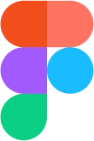

Federica
Mastropietro
Junior UX/UI Designer
Un percorso non lineare e un background eterogeneo mi hanno insegnato la resilienza e la flessibilità ai cambiamenti. Metto l'empatia e la creatività al servizio di esperienze utente intuitive, costruite attraverso l'ascolto e la forza dello storytelling.
- Reggio Emilia, Italia
- Disponibile da remoto
- in/federica-mastropietro
Formazione
-
Master in UX/UI Design | start2impact
Dicembre 2024 - in corso
- Focus su ricerca, prototipazione e Design Systems
- Sviluppo di progetti pratici basati su brief reali
-
Comunicazione, tecnologie e culture digitali | La Sapienza, Roma
Settembre 2020 - 2023
- Media digitali, sociologia e comunicazione
- Conclusione anticipata per focalizzazione sulla carriera in UX/UI Design
-
Design degli Interni | Politecnico di Milano
Settembre 2019 - Settembre 2020
- Progettazione dello spazio, ergonomia e composizione visiva
- Trasferimento alla Sapienza per approfondire le dinamiche della comunicazione digitale
-
Diploma liceo scientifico | Liceo scientifico Ariosto-Spallanzani, Reggio Emilia
2014 - 2019
- Cultura generale
Esperienze complementari
-
Corso fotografia base | Digital Camera School
Ottobre 2023 - Novembre 2023
- Tecnica fotografica e composizione visiva.
-
Ufficio Marketing + IT | Seds Sapienza, Roma
2022-2023
- Gestione dei canali social e realizzazione di asset grafici per la comunicazione istituzionale.
-
Ciceroni FAI, Reggio Emilia
2017-2019
- Public speaking: guida alla scoperta del patrimonio storico-artistico locale durante le Giornate FAI
-
Barista | Cafe Coho, Brighton, Inghilterra
Luglio 2017 - Agosto 2017
- Gestione delle dinamiche di gruppo e del servizio al cliente in un ambiente frenetico e multiculturale
-
Studio Associato Mastropietro-Natale-Nironi Commercialisti, Reggio Emilia
Giugno 2017 - Luglio 2017
- Gestione e archiviazione di documenti fiscali.
-
Customer Assistant | Douglas, Reggio Emilia
Dicembre 2017
- Gestione del packaging e presentazione estetica del prodotto
Hard Skills
- Graphic
- Wireframing
- UI Prototyping
- UX Research
- Copywriting
- HTML e CSS
Soft Skills
- Teamwork
- Design Thinking
- Problem Solving
- Creativity
- People Oriented
- Precision
- Networking
Strumenti
-

Lingue
- Italiano: Madrelingua
- Inglese: Avanzato
- Spagnolo: Elementare